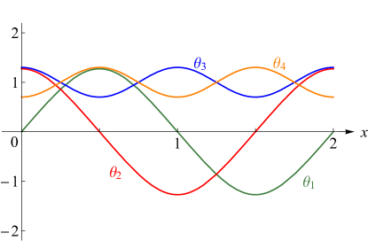

Errata
The following corrections and other changes have been made
in the DLMF,
and are pending for the Handbook of Mathematical Functions.
The Editors thank the users who have contributed to the accuracy of
the DLMF Project by submitting reports of possible errors.
For confirmed errors, the Editors have made the corrections listed here.
Printable errata  .
.
Version 1.2.4 (March 15, 2025)
Errata
- Equation (17.10.6)
-
17.10.6 In the numerator of the argument of the basic bilateral hypergeometric function and in the numerator of the arguments of the basic hypergeometric functions, we replaced by . We also added a missing factor in the first term on the right-hand side.
Other Changes
Version 1.2.3 (December 15, 2024)
Errata
- Equation (25.12.13)
-
25.12.13 In this update we replaced by . In this way we can remove the constraints on and .
Other Changes
- Additions
-
Text was added below (17.8.3) discussing higher-order tuple product identities.
Version 1.2.2 (September 15, 2024)
Changes
- Additions
- Subsection 4.45(iii)
-
In the first paragraph of this subsection, was replaced with . In the second paragraph of this subsection, was replaced with .
- Subsection 26.7(iv)
-
Immediately below (26.7.8), was replaced with twice and the text “Lambert function” was replaced with the text “Lambert -function”.
- References
-
All references to Gradshteyn and Ryzhik (2015) were updated to the 8th edition.
Version 1.2.1 (June 15, 2024)
Errata
- Subsection 1.6(v)
-
Just above (1.6.57) “clockwise” has been replaced with “anticlockwise”.
Suggested by Denys Bondar on 2024-04-10
- Equation (8.18.9)
-
8.18.9 On the right-hand side of the asymptotic expansion as , the factor “” was replaced by “”.
- Equation (14.20.22)
-
14.20.22 In the asymptotic expansion, as , on the right-hand side, we have removed an incorrect multiplicative factor of .
Suggested by Tianye Liu on 2024-03-18
- Equation (17.8.2)
-
17.8.2 The constraint was added.
- Equation (17.8.4)
-
17.8.4 The constraint was added.
- Equation (17.8.5)
-
17.8.5 The constraint was added.
- Equation (17.8.6)
-
17.8.6 The constraint was added.
- Equation (17.8.7)
-
17.8.7 The constraint was added.
- Equation (17.8.8)
-
17.8.8 The constraint which was originally given by has been replaced with .
- §25.11(xii)
Other Changes
- Addition
- §1.17(iii)
-
Just above (1.17.21), “formal” has been replaced with “formal (-periodic)” (suggested by Scott Glancy on 2023-08-23).
- Figure 5.9.1
- §17.5
- §17.6
-
Just above §17.6(i) a paragraph Analytic Continuation was inserted describing the analytic continuation of the formulas which follow.
- §17.8
-
Just above the paragraph Ramanujan’s Summation, a paragraph Analytic Continuation was inserted describing the analytic continuation of the formulas which follow.
- §25.14(i)
- §25.14(ii)
Version 1.2.0 (March 27, 2024)
This release increments the minor version number and contains considerable additions of new material and clarifications. In 2016, on the advice of the senior associate editors, is was decided to expand Chapter 18 (Orthogonal Polynomials (OP)). This release is the result of that decision and it includes, among other new material, enlarged sections on associated OP’s, Pollaczek polynomials and physical applications. It was decided that much more information should be given in the section on general OP’s, and as a consequence Chapter 1 (Algebraic and Analytic Methods), also required a significant expansion. This especially included updated information on matrix analysis, measure theory, spectral analysis, and a new section on linear second order differential operators and eigenfunction expansions.
The changes to Chapter 18 include the addition of 28 new sections and subsections. In particular, these are: §§18.2(vii)–18.2(xii), §18.14(iv), §18.16(vii), §§18.28(ix)–18.28(xi), §§18.30(iii)–18.30(viii) (Section 18.30), §18.33(vi), §18.36(v), §18.36(vi), §§18.39(iii)–18.39(v), §18.40(i), §18.40(ii) (Section 18.40), as well as many new equations, new figures, namely Figures: 18.39.1, 18.39.2, 18.40.1, 18.40.2, and updates to the main text. The specific updates to Chapter 18 include some results for general orthogonal polynomials including quadratic transformations, uniqueness of orthogonality measure and completeness, moments, continued fractions, and some special classes of orthogonal polynomials. For some classical polynomials we give some positive sums and discriminants. We have also incorporated material on continuous -Jacobi polynomials, and several new limit transitions. We have significantly expanded the section on associated orthogonal polynomials, including expanded properties of associated Laguerre, Hermite, Meixner–Pollaczek, and corecursive orthogonal and numerator and denominator orthogonal polynomials. We now include Markov’s Theorem. In regard to orthogonal polynomials on the unit circle, we now discuss monic polynomials, Verblunsky’s Theorem, and Szegő’s theorem. We also discuss non-classical Laguerre polynomials and give much more details and examples on exceptional orthogonal polynomials. We have also completely expanded our discussion on applications of orthogonal polynomials in the physical sciences, and also methods of computation for orthogonal polynomials.
The changes in Chapter 1 include the addition of 15 new sections and subsections. In particular, these are: §1.2(v), §1.2(vi), §1.3(iv), §1.10(xi), §1.13(viii), §§1.18(i)–1.18(x) (Section 1.18), as well as many new equations and updates to the main text. The specific updates to Chapter 1 include the addition of an entirely new subsection §1.18 entitled “Linear Second Order Differential Operators and Eigenfunction Expansions” which is a survey of the formal spectral analysis of second order differential operators. The spectral theory of these operators, based on Sturm-Liouville and Liouville normal forms, distribution theory, is now discussed more completely, including linear algebra, matrices, matrices as linear operators, orthonormal expansions, Stieltjes integrals/measures, generating functions. This update also includes improvments for Chapters 5, 10, 17, 19 and 32.
Errata
- Equations (1.3.5), (1.3.6), (1.3.7)
-
1.3.5 1.3.6 1.3.7 Previously we used the notation , , for , respectively.
- Equations (1.8.5), (1.8.6)
-
1.8.5 1.8.6 Previously these equations were given as inequalities. For square integrable functions the inequality can be sharpened to .
- Equation (17.6.1)
-
17.6.1 The constraint was added.
- Equations (18.2.5), (18.2.6)
-
18.2.5 18.2.6 The third alternatives, involving , were included.
- Equations (18.2.12), (18.2.13)
-
18.2.12 18.2.13 The left-hand sides were updated to include the definition of the Christoffel–Darboux kernel .
- Equations (18.5.1), (18.5.2), (18.5.3), (18.5.4)
-
18.5.1 18.5.2 18.5.3 18.5.4 These equations were updated to include the definition in terms of where .
- Equation (18.7.25)
-
18.7.25 We included the case .
- Equation (18.12.2)
-
18.12.2 This equation was updated to include on the left-hand side, its definition in terms of a product of two functions.
- Equations (18.16.2), (18.16.3)
-
18.16.2 18.16.3 , We made explicit, as well as the limits in terms of .
- Equations (18.16.12), (18.16.13)
-
18.16.12 18.16.13 The presentation of these inequalities has been improved.
- Equations (18.17.45), (18.17.46)
-
18.17.45 18.17.46 The equivalences in terms of and were added.
- Equation (18.27.4)
-
18.27.4 We changed the presentation of this equation. Previously the was presented as .
- Equation (18.27.13)
-
18.27.13 The representation was added.
- Equation (18.28.1)
-
18.28.1 18.28.1_5 Previously we presented all the information of these formulas in one equation
- Equation (18.28.2)
-
18.28.2 , The constraint of this equation was updated to include .
- Equation (18.28.6)
-
18.28.6 The constraint of this equation was updated to include .
- Equation (18.28.8)
-
18.28.8 or ; ; The constraint which originally stated that “” has been updated to be “”.
- Subsection 18.28(iv)
- Equation (18.34.1)
-
18.34.1 This equation was updated to include the definition of Bessel polynomials in terms of Laguerre polynomials and the Whittaker confluent hypergeometric function.
- Equation (18.34.2)
-
18.34.2 This equation was updated to include definitions in terms of the modified spherical Bessel function of the second kind.
- Equation (18.35.1)
-
18.35.1 These equations which were previously given for Pollaczek polynomials of type 2 has been updated for Pollaczek polynomials of type 3.
- Equation (18.35.2)
-
18.35.2 This recurrence relation which was previously given for Pollaczek polynomials of type 2 (the case ) has been updated for Pollaczek polynomials of type 3.
- Equation (18.35.5)
- Equation (18.35.9)
-
18.35.9 Previously we gave only the first identity .
- Equation (18.38.3)
-
18.38.3 , , This equation was updated to include the value of the sum in terms of the function. Also the constraint was previously , .
- Subsection 19.7(i)
-
Just above (19.7.3) the requirement that was added.
Suggested by Alex Barnett on 2024-01-12
- Equations (32.8.10), (32.10.9)
-
32.8.10 32.10.9 The right-hand side of these equation, which was originally written as a matrix determinant, was rewritten using the Wronskian determinant notation. Also, in each preceding sentence, the word ‘determinant’ was replaced with ‘Wronskian determinant’.
Other Changes
- Chapter 1 Additions
-
The following additions were made in Chapter 1:
-
§1.2
New subsections, 1.2(v) Matrices, Vectors, Scalar Products, and Norms and 1.2(vi) Square Matrices, with Equations (1.2.27)–(1.2.77).
-
§1.3
The title of this section was changed from “Determinants” to “Determinants, Linear Operators, and Spectral Expansions”. An extra paragraph just below (1.3.7). New subsection, 1.3(iv) Matrices as Linear Operators, with Equations (1.3.20), (1.3.21).
- §1.4
-
§1.8
In Subsection 1.8(i), the title of the paragraph “Bessel’s Inequality” was changed to “Parseval’s Formula”. We give the relation between the real and the complex coefficients, and include more general versions of Parseval’s Formula, Equations (1.8.6_1), (1.8.6_2). The title of Subsection 1.8(iv) was changed from “Transformations” to “Poisson’s Summation Formula”, and we added an extra remark just below (1.8.14).
-
§1.10
New subsection, 1.10(xi) Generating Functions, with Equations (1.10.26)–(1.10.29).
-
§1.13
New subsection, 1.13(viii) Eigenvalues and Eigenfunctions: Sturm-Liouville and Liouville forms, with Equations (1.13.26)–(1.13.31).
-
§1.14(i)
Another form of Parseval’s formula, (1.14.7_5).
-
§1.16
We include several extra remarks and Equations (1.16.3_5), (1.16.9_5). New subsection, 1.16(ix) References for Section 1.16.
-
§1.17
Two extra paragraphs in Subsection 1.17(ii) Integral Representations, with Equations (1.17.12_1), (1.17.12_2); Subsection 1.17(iv) Mathematical Definitions is almost completely rewritten.
-
§1.18
An entire new section, 1.18 Linear Second Order Differential Operators and Eigenfunction Expansions, including new subsections, 1.18(i)–1.18(x), and several equations, (1.18.1)–(1.18.71).
-
§1.2
- Chapter 5 Addition
-
Equation (5.2.9).
- Chapter 10 Additions
- Chapter 18 Additions
-
The following additions were made in Chapter 18:
-
§18.2
In Subsection 18.2(i), Equation (18.2.1_5); the paragraph title “Orthogonality on Finite Point Sets” has been changed to “Orthogonality on Countable Sets”, and there are minor changes in the presentation of the final paragraph, including a new equation (18.2.4_5). The presentation of Subsection 18.2(iii) has changed, Equation (18.2.5_5) was added and an extra paragraph on standardizations has been included. The presentation of Subsection 18.2(iv) has changed and it has been expanded with two extra paragraphs and several new equations, (18.2.9_5), (18.2.11_1)–(18.2.11_9). Subsections 18.2(v) (with (18.2.12_5), (18.2.14)–(18.2.17)) and 18.2(vi) (with (18.2.17)–(18.2.20)) have been expanded. New subsections, 18.2(vii)–18.2(xii), with Equations (18.2.21)–(18.2.46),
-
§18.3
A new introduction, minor changes in the presentation, and three new paragraphs.
- §18.5
-
§18.8
Line numbers and two extra rows were added to Table 18.8.1.
- §18.9
- §18.12
- §18.14
-
§18.15
Equation (18.15.4_5).
-
§18.16
The title of Subsection 18.16(iii) was changed from “Ultraspherical and Legendre” to “Ultraspherical, Legendre and Chebyshev”. New subsection, 18.16(vii) Discriminants, with Equations (18.16.19)–(18.16.21).
-
§18.17
Extra explanatory text at many places and seven extra integrals (18.17.16_5), (18.17.21_1)–(18.17.21_3), (18.17.28_5), (18.17.34_5), (18.17.41_5).
-
§18.18
Extra explanatory text at several places and the title of Subsection 18.18(iv) was changed from “Connection Formulas” to “Connection and Inversion Formulas”.
-
§18.19
A new introduction.
-
§18.21
Equation (18.21.13).
- §18.25
- §18.26
-
§18.27
Extra text at the start of this section and twenty seven extra formulas, (18.27.4_1), (18.27.4_2), (18.27.6_5), (18.27.9_5), (18.27.12_5), (18.27.14_1)–(18.27.14_6), (18.27.17_1)–(18.27.17_3), (18.27.20_5), (18.27.25), (18.27.26), (18.28.1_5).
- §18.28
-
§18.30
Originally this section did not have subsections. The original seven formulas have now more explanatory text and are split over two subsections. New subsections 18.30(iii)–18.30(viii), with Equations (18.30.8)–(18.30.31).
-
§18.32
This short section has been expanded, with Equation (18.32.2).
- §18.33
- §18.34
-
§18.35
This section on Pollaczek polynomials has been significantly updated with much more explanations and as well to include the Pollaczek polynomials of type 3 which are the most general with three free parameters. The Pollaczek polynomials which were previously treated, namely those of type 1 and type 2 are special cases of the type 3 Pollaczek polynomials. In the first paragraph of this section an extensive description of the relations between the three types of Pollaczek polynomials is given which was lacking previously. Equations (18.35.0_5), (18.35.2_1)–(18.35.2_5), (18.35.4_5), (18.35.6_1)–(18.35.6_6), (18.35.10).
-
§18.36
This section on miscellaneous polynomials has been expanded with new subsections, 18.36(v) on non-classical Laguerre polynomials and 18.36(vi) with examples of exceptional orthogonal polynomials, with Equations (18.36.1)–(18.36.10). In the titles of Subsections 18.36(ii) and 18.36(iii) we replaced “OP’s” by “Orthogonal Polynomials”.
-
§18.38
The paragraphs of Subsection 18.38(i) have been re-ordered and one paragraph was added. The title of Subsection 18.38(ii) was changed from “Classical OP’s: Other Applications” to “Classical OP’s: Mathematical Developments and Applications”. Subsection 18.38(iii) has been expanded with seven new paragraphs, and Equations (18.38.4)–(18.38.11).
-
§18.39
This section was completely rewritten. The previous 18.39(i) Quantum Mechanics has been replaced by Subsections 18.39(i) Quantum Mechanics and 18.39(ii) A 3D Separable Quantum System, the Hydrogen Atom, containing the same essential information; the original content of the subsection is reproduced below for reference. Subsection 18.39(ii) was moved to 18.39(v) Other Applications. New subsections, 18.39(iii) Non Classical Weight Functions of Utility in DVR Method in the Physical Sciences, 18.39(iv) Coulomb–Pollaczek Polynomials and J-Matrix Methods; Equations (18.39.7)–(18.39.48); and Figures 18.39.1, 18.39.2.
The original text of 18.39(i) Quantum Mechanics was:
“Classical OP’s appear when the time-dependent Schrödinger equation is solved by separation of variables. Consider, for example, the one-dimensional form of this equation for a particle of mass with potential energy :
errata.1 where is the reduced Planck’s constant. On substituting , we obtain two ordinary differential equations, each of which involve the same constant . The equation for is
errata.2 For a harmonic oscillator, the potential energy is given by
errata.3 where is the angular frequency. For (18.39.2) to have a nontrivial bounded solution in the interval , the constant (the total energy of the particle) must satisfy
errata.4 . The corresponding eigenfunctions are
errata.5 where , and is the Hermite polynomial. For further details, see Seaborn (1991, p. 224) or Nikiforov and Uvarov (1988, pp. 71-72).
A second example is provided by the three-dimensional time-independent Schrödinger equation
errata.6 when this is solved by separation of variables in spherical coordinates (§1.5(ii)). The eigenfunctions of one of the separated ordinary differential equations are Legendre polynomials. See Seaborn (1991, pp. 69-75).
For a third example, one in which the eigenfunctions are Laguerre polynomials, see Seaborn (1991, pp. 87-93) and Nikiforov and Uvarov (1988, pp. 76-80 and 320-323).”
- Section 18.40
-
§18.2
Version 1.1.12 (December 15, 2023)
Errata
- Equation (17.7.11)
-
17.7.11 The missing factor was inserted on the right-hand side.
Other Changes
Version 1.1.11 (September 15, 2023)
Errata
- Subsection 1.4(iii)
-
A sentence was added just below (1.4.15) indicating that we assume that for all in some neighborhood of with .
Suggested by Svante Janson on 2023-08-21
- Equation (5.17.5)
-
5.17.5 For consistency we have replaced by .
- Equation (17.4.2)
-
17.4.2 This limit relation, which was previously accurate for , has been updated to be accurate for .
- Equation (17.5.1)
-
17.5.1 The constraint originally given by is not necessary and has been removed.
Other Changes
- Additions
-
Equation (4.13.5_3) (suggested by Warren Smith on 2023-08-10).
- Subsection 17.7(iii)
-
The title of the paragraph which was previously “Andrews’ Terminating -Analog of (17.7.8)” has been changed to “Andrews’ -Analog of the Terminating Version of Watson’s Sum (16.4.6)”. The title of the paragraph which was previously “Andrews’ Terminating -Analog” has been changed to “Andrews’ -Analog of the Terminating Version of Whipple’s Sum (16.4.7)”.
Version 1.1.10 (June 15, 2023)
Errata
- Equation (17.5.5)
-
17.5.5 The constraint originally given by is not necessary and has been removed.
- Equation (17.7.1)
-
17.7.1 The constraint originally given by is not necessary and has been removed.
- Subsection 19.2(ii) and Equation (19.2.9)
- Table 22.5.2
-
The entry for , , which previously was has been corrected to be . The previous result was correct only for . Also, the presentation of several of the other results in the middle column for have been simplfied.
Suggested by Alan Barnes on 2023-03-06
Other Changes
Version 1.1.9 (March 15, 2023)
Errata
- Equation (17.6.16)
-
17.6.16 , The constraint originally given by has been corrected to be .
Other Changes
- Section 16.11(i)
- Section 18.36(ii)
- Native MathML
-
DLMF now uses browser-native MathML rendering for mathematics, by default, in all browsers which support MathML. See About MathML for more details and for other options.
Version 1.1.8 (December 15, 2022)
Errata
- Equation (8.7.6)
-
8.7.6 , The constraint was updated to include “”.
Suggested by Walter Gautschi on 2022-10-14
Other Changes
- Rearrangement
-
In previous versions of the DLMF, in §8.18(ii), the notation was used for the scaled gamma function . Now in §8.18(ii), we adopt the notation which was introduced in Version 1.1.7 (October 15, 2022) and correspondingly, Equation (8.18.13) has been removed. In place of Equation (8.18.13), it is now mentioned to see (5.11.3).
- Section 9.8(iv)
- Section 10.18(iii)
- Section 27.11
Version 1.1.7 (October 15, 2022)
Errata
- Equation (8.11.19)
-
8.11.19 The coefficient was given explicitly.
Reported by Gergő Nemes on 2022-06-22
- Equation (19.21.10)
-
19.21.10 The last term on the right-hand side has been corrected to be .
Reported by Abdulhafeez Abdulsalam on 2022-06-26
- Subsection 19.25(i)
-
In the first line of the section, the constraint was corrected to read .
Reported by Charles Karney on 2022-09-18
- Equations (31.3.10), (31.3.11)
-
31.3.10 31.3.11 In both equations, the second entry in the has been corrected with an extra minus sign.
- Equation (31.11.6)
-
31.11.6 The sign has been corrected and the final term in the numerator has been corrected to be .
Suggested by Hans Volkmer on 2022-06-02
- Equation (31.11.8)
-
31.11.8 The sign has been corrected and the final term in the numerator has been corrected to be .
Suggested by Hans Volkmer on 2022-06-02
Other Changes
- Expansion
-
§4.13 has been enlarged. The Lambert -function is multi-valued and we use the notation , , for the branches. The original two solutions are identified via and .
Other changes are the introduction of the Wright -function and tree -function in (4.13.1_2) and (4.13.1_3), simplification formulas (4.13.3_1) and (4.13.3_2), explicit representation (4.13.4_1) for , additional Maclaurin series (4.13.5_1) and (4.13.5_2), an explicit expansion about the branch point at in (4.13.9_1), extending the number of terms in asymptotic expansions (4.13.10) and (4.13.11), and including several integrals and integral representations for Lambert -functions in the end of the section.
- Additions
- Subsection 13.8(iv)
-
An entire new Subsection 13.8(iv) “Large and ”, was added.
- Subsection 31.11(ii)
-
Just below (31.11.5), we mention that we take .
- Subsection 31.11(iii)
- Subsection 31.11(iv)
-
Just below (31.11.17), has been replaced with .
Version 1.1.6 (June 30, 2022)
Errata
- Chapters 10 Bessel Functions, 18 Orthogonal Polynomials, 34 3j, 6j, 9j Symbols
- Chapters 1 Algebraic and Analytic Methods, 10 Bessel Functions, 14 Legendre and Related Functions, 18 Orthogonal Polynomials, 29 Lamé Functions
-
Over the preceding two months, the subscript parameters of the Ferrers and Legendre functions, and the Laguerre polynomial, , were incorrectly displayed as superscripts. Reported by Roy Hughes on 2022-05-23
Version 1.1.5 (March 15, 2022)
Errata
Other Changes
Version 1.1.4 (January 15, 2022)
Errata
- Equation (25.10.3)
-
The constraint was added.
Reported by Gergő Nemes on 2021-08-23
- Equation (25.11.9)
-
The constraint which originally read “, ” has been extended to be “ if ; if ”.
Reported by Gergő Nemes on 2021-08-23
- Equation (25.13.3)
-
The constraint which originally read “, ” has been extended to be “ if ; if ”.
Reported by Gergő Nemes on 2021-09-14
- Equation (25.14.5)
-
The constraint which originally read “, , ” has been extended to be “, if ; , if ”.
Reported by Gergő Nemes on 2021-09-14
- Equation (25.14.6)
-
The constraint which originally read “ if ; if ” has been improved to be “ if ; , if ”.
Reported by Gergő Nemes on 2021-08-23
- Equation (25.15.6)
-
25.15.6 The upper-index of the finite sum which originally was , was replaced with since .
Reported by Gergő Nemes on 2021-08-23
- Equation (25.15.10)
-
25.15.10 The upper-index of the finite sum which originally was , was replaced with since .
Reported by Gergő Nemes on 2021-08-23
Other Changes
- Source citations
-
Specific source citations and proof metadata are now given for all equations in Chapter 25 Zeta and Related Functions.
- Subsection 25.10(ii)
-
In the paragraph immediately below (25.10.4), it was originally stated that “more than one-third of all zeros in the critical strip lie on the critical line.” which referred to Levinson (1974). This sentence has been updated with “one-third” being replaced with “41%” now referring to Bui et al. (2011) (suggested by Gergő Nemes on 2021-08-23).
- Notation
Version 1.1.3 (September 15, 2021)
Errata
- Equations (14.5.3), (14.5.4)
-
The constraints in (14.5.3), (14.5.4) on have been corrected to exclude all negative integers since the Ferrers function of the second kind is not defined for these values.
Reported by Hans Volkmer on 2021-06-02
- Equations (14.13.1), (14.13.2)
-
Originally it was stated that these Fourier series converge “…conditionally when is real and .” It has been corrected to read “If then they converge, but, if , they do not converge absolutely.”
Reported by Hans Volkmer on 2021-06-04
- Equation (17.11.2)
-
17.11.2 The factor originally used in the denominator has been corrected to be .
- Chapter 19
-
Factors inside square roots on the right-hand sides of formulas (19.18.6), (19.20.10), (19.20.19), (19.21.7), (19.21.8), (19.21.10), (19.25.7), (19.25.10) and (19.25.11) were written as products to ensure the correct multivalued behavior.
Reported by Luc Maisonobe on 2021-06-07
- Subsection 19.25(iii)
-
The constraint was added to the first sentence of this section.
Other Changes
- Additions
- Subsection 3.2(vi)
-
A paragraph was added just below (3.2.23) treating the case of -orthogonality.
- Subsection 3.3(i)
- Subsections 10.6(i), 10.29(i)
- Equation (17.4.6)
-
The multi-product notation in the denominator of the right-hand side was used.
- Section 24.1
-
The text “greatest common divisor of ” was replaced with “greatest common divisor of ”.
- Notation
-
In §3.7(iii), the symbol is now being used in several places instead of in order to disambiguate symbols.
- References
Version 1.1.2 (June 15, 2021)
Errata
- Equation (2.7.25)
-
2.7.25 The integrand was corrected so that the absolute value does not include the differential. Also an absolute value was introduced on the right-hand side to ensure a non-negative value for .
- Equation (3.3.34)
-
In the online version, the leading divided difference operators were previously omitted from these formulas, due to programming error.
Reported by Nico Temme on 2021-06-01
- Equation (4.13.11)
-
4.13.11 Originally the sign in front of was . The correct sign is .
- Equation (10.23.11)
-
10.23.11 Originally the contour of integration written incorrectly as , has been corrected to be .
Reported by Mark Dunster on 2021-03-22
Other Changes
- Additions
-
Section: 15.9(v) Complete Elliptic Integrals. Equations: (11.11.9_5), (11.11.13_5), Intermediate equality in (15.4.27) which relates to , (15.4.34), (19.5.4_1), (19.5.4_2) and (19.5.4_3).
- Section 11.11
-
The asymptotic results were originally for real valued and . However, these results are also valid for complex values of . The maximum sectors of validity are now specified.
- Equation (11.11.1)
-
Pochhammer symbol representations for the functions and were inserted.
- Paragraph Starting from Invariants (in §23.22(ii))
-
The statements “If and are real” and “If and are not both real” have been further clarified (suggested by Alan Barnes on 2021-03-26).
- Linking
-
Pochhammer and -Pochhammer symbols in several equations now correctly link to their definitions.
- Usability
-
Linkage of mathematical symbols to their definitions were corrected or improved.
- Citations
-
Additional citations were added to Section 11.11.
Version 1.1.1 (March 15, 2021)
Errata
- Equation (2.3.6)
-
2.3.6 The integrand has been corrected so that the absolute value does not include the differential.
Reported by Juan Luis Varona on 2021-02-08
- Equation (23.6.11)
-
23.6.11 The factor has been corrected to be .
- Equation (23.6.12)
-
23.6.12 The factor has been corrected to be .
- Equation (23.6.15)
-
23.6.15 The factor has been corrected to be .
Reported by Jan Felipe van Diejen on 2021-02-10
Other Changes
Version 1.1.0 (December 15, 2020)
This release increments the minor version number and contains considerable additions of new material and clarifications. These additions were facilitated by an extension of the scheme for reference numbers; with “_” introducing intermediate numbers. These enable insertions of new numbered objects between existing ones without affecting their permanent identifiers and URLs.
Errata
- Subsection 19.25(vi)
-
This subsection has been significantly updated. In particular, the following formulae have been corrected. Equation (19.25.35) has been replaced by
19.25.35 in which the left-hand side has been replaced by for some , and the right-hand side has been multiplied by . Equation (19.25.37) has been replaced by
19.25.37 in which the left-hand side has been replaced by and the right-hand side has been multiplied by . Equation (19.25.39) has been replaced by
19.25.39 in which the left-hand side was replaced by , for some and . Equation (19.25.40) has been replaced by
19.25.40 in which the left-hand side has been replaced by , and the right-hand side was multiplied by . For more details see §19.25(vi).
- Subsection 20.10(ii)
-
In the first sentence of this subsection, the constraint has been replaced with .
Other Changes
- Additions
-
Sections: ¶Herglotz generating function (in §14.30(ii)), ¶Lerch Sum (in §16.4(ii)). Equations: (3.5.20_1), (3.5.20_2), (4.21.1_5) (suggested by Ted Ersek on 2018-08-14), (13.6.11_1), (13.6.11_2), (13.11.2), (13.11.3), (13.11.4), (14.30.11_5) (suggested by Anupam Garg on 2018-12-07), (14.30.13), (15.5.16_5), (17.6.4_5), (17.8.8), (17.9.3_5) (addition of previous three equations suggested by Slobodan Damjanović on 2019-10-17), (19.2.11_5) (suggested by Jan Mangaldan on 2019-08-26).
- Rearrangement
- Subsections 2.3(ii), 2.3(iv), 2.3(vi)
-
Clarifications regarding -powers and asymptotics were added, along with extra citations.
- Subsection 3.2(vi)
-
The material for this subsection has been improved to be more explicit.
- Subsection 3.5(vi)
- Citations
Version 1.0.28 (September 15, 2020)
Errata
- Equation (1.4.34)
-
1.4.34 The integrand has been corrected so that the absolute value does not include the differential.
Reported by Tran Quoc Viet on 2020-08-11
- Equation (14.6.6)
-
14.6.6 The right-hand side has been corrected by replacing the Legendre function with the Ferrers function .
- Table 18.3.1
-
There has been disagreement about the identification of the Chebyshev polynomials of the third and fourth kinds, denoted and , in published references. Originally, DLMF used the definitions given in (Andrews et al., 1999, Remark 2.5.3). However, those definitions were the reverse of those used by Mason and Handscomb (2003), Gautschi (2004) following Mason (1993) and Gautschi (1992), as was noted in several warnings added in Version 1.0.10 (August 7, 2015) of the DLMF. Since the latter definitions are more widely established, the DLMF is now adopting the definitions of Mason and Handscomb (2003). Essentially, what we previously denoted is now written as , and vice-versa.
- Equation (20.4.2)
-
20.4.2 The representation in terms of was added to this equation.
- Equations (22.14.16), (22.14.17)
-
22.14.16 22.14.17 Originally, a factor of was missing from the terms containing the .
Reported by Fred Hucht on 2020-08-06
- Equation (27.14.2)
-
27.14.2 The representation in terms of was added to this equation.
Other Changes
- Chapters 14 Legendre and Related Functions, 15 Hypergeometric Function
- Subsection 17.2(i)
-
A sentence was added recommending §27.14(ii) for properties of .
- Equations (15.2.3_5), (19.11.6_5)
-
These equations, originally added in Other Changes and Other Changes, respectively, have been assigned interpolated numbers.
Version 1.0.27 (June 15, 2020)
Changes
- Paragraph Inversion Formula (in §35.2)
-
The wording was changed to make the integration variable more apparent.
- Usability
-
In many cases, the links from mathematical symbols to their definitions were corrected or improved. These links were also enhanced with ‘tooltip’ feedback, where supported by the user’s browser.
Version 1.0.26 (March 15, 2020)
Changes
- Equation (19.20.11)
-
19.20.11 as , () real, we have added the constant term and the order term , and hence was replaced by .
- Paragraph Prime Number Theorem (in §27.12)
-
The largest known prime, which is a Mersenne prime, was updated from (2009) to (2018).
- Equation (35.7.8)
-
Originally had the constraint . This constraint was replaced with ; for some ; and for all .
- General
-
Several biographies had their publications updated.
Version 1.0.25 (December 15, 2019)
Errata
- Section 14.30
-
In regard to the definition of the spherical harmonics , the domain of the integer originally written as has been replaced with the more general . Because of this change, in the sentence just below (14.30.2), “tesseral for and sectorial for ” has been replaced with “tesseral for and sectorial for ”. Furthermore, in (14.30.4), has been replaced with .
Reported by Ching-Li Chai on 2019-10-05
- Equations (22.9.8), (22.9.9) and (22.9.10)
-
22.9.8 22.9.9 22.9.10 Originally all the functions , , and in Equations (22.9.8), (22.9.9) and (22.9.10) were written incorrectly with . These functions have been corrected so that they are written with . In the sentence just below (22.9.10), the expression has been corrected to read .
Reported by Juan Miguel Nieto on 2019-11-07
Other Changes
- Subsection 1.9(i)
-
A phrase was added, just below (1.9.1), which elaborates that .
- Usability
-
Poor spacing in math was corrected in several chapters.
- Section 1.13
-
In Equation (1.13.4), the determinant form of the two-argument Wronskian
1.13.4 was added as an equality. In ¶Wronskian (in §1.13(i)), immediately below Equation (1.13.4), a sentence was added indicating that in general the -argument Wronskian is given by , where . Immediately below Equation (1.13.4), a sentence was added giving the definition of the -argument Wronskian. It is explained just above (1.13.5) that this equation is often referred to as Abel’s identity. Immediately below Equation (1.13.5), a sentence was added explaining how it generalizes for th-order differential equations. A reference to Ince (1926, §5.2) was added.
- Section 3.1
-
In ¶IEEE Standard (in §3.1(i)), the description was modified to reflect the most recent IEEE 754-2019 Floating-Point Arithmetic Standard IEEE (2019). In the new standard, single, double and quad floating-point precisions are replaced with new standard names of binary32, binary64 and binary128. Figure 3.1.1 has been expanded to include the binary128 floating-point memory positions and the caption has been updated using the terminology of the 2019 standard. A sentence at the end of Subsection 3.1(ii) has been added referring readers to the IEEE Standards for Interval Arithmetic IEEE (2015, 2018).
Suggested by Nicola Torracca.
- Equation (35.7.3)
-
Originally the matrix in the argument of the Gaussian hypergeometric function of matrix argument was written with round brackets. This matrix has been rewritten with square brackets to be consistent with the rest of the DLMF.
Version 1.0.24 (September 15, 2019)
Errata
Other Changes
- Paragraph Steed’s Algorithm (in §3.10(iii))
- Subsection 19.11(i)
-
A sentence and unnumbered equation
were added which indicate that care must be taken with the multivalued functions in (19.11.5). See (Cayley, 1961, pp. 103-106).
Suggested by Albert Groenenboom.
- Subsection 33.14(iv)
-
Just below (33.14.9), the constraint described in the text “ when ,” was removed. In Equation (33.14.13), the constraint was added. In the line immediately below (33.14.13), it was clarified that is times a polynomial in , instead of simply a polynomial in . In Equation (33.14.14), a second equality was added which relates to Laguerre polynomials. A sentence was added immediately below (33.14.15) indicating that the functions , , do not form a complete orthonormal system.
Version 1.0.23 (June 15, 2019)
Errata
- Equation (17.9.3)
-
17.9.3 Originally, the second term on the right-hand side was missing. The form of the equation where the second term is missing is correct if the is terminating. It is this form which appeared in the first edition of Gasper and Rahman (1990). The more general version which appears now is what is reproduced in Gasper and Rahman (2004, (III.5)).
Reported by Roberto S. Costas-Santos on 2019-04-26
- Equation (23.12.2)
-
23.12.2 Originally, the factor of 2 was missing from the denominator of the argument of the function.
Reported by Blagoje Oblak on 2019-05-27
Other Changes
- Equations (15.6.1)–(15.6.9)
-
The Olver hypergeometric function , previously omitted from the left-hand sides to make the formulas more concise, has been added. In Equations (15.6.1)–(15.6.5), (15.6.7)–(15.6.9), the constraint has been added. In (15.6.6), the constraint has been added. In Section 15.6 Integral Representations, the sentence immediately following (15.6.9), “These representations are valid when , except (15.6.6) which holds for .”, has been removed.
- Subsection 25.2(ii) Other Infinite Series
- Equation (25.11.36)
- Usability
-
Additional keywords are being added to formulas (an ongoing project); these are visible in the associated ‘info boxes’ linked to the
![[Uncaptioned image]](g1.png) icons to the right of each formula, and provide better search capabilities.
icons to the right of each formula, and provide better search capabilities.
Version 1.0.22 (March 15, 2019)
Errata
- Subsection 14.2(iii)
-
Previously the exponents of the associated Legendre differential equation (14.2.2) at infinity were given incorrectly by . These were replaced by .
Reported by Hans Volkmer on 2019-01-30
- Subsection 18.15(i)
-
In the line just below (18.15.4), it was previously stated “is less than twice the first neglected term in absolute value.” It now states “is less than twice the first neglected term in absolute value, in which one has to take .”
Reported by Gergő Nemes on 2019-02-08
- Equation (33.11.1)
-
33.11.1 Previously this formula was expressed as an equality. Since this formula expresses an asymptotic expansion, it has been corrected by using instead an relation.
Reported by Gergő Nemes on 2019-01-29
Other Changes
Version 1.0.21 (December 15, 2018)
Errata
- Equation (10.22.72)
-
10.22.72 Originally, the factor on the right-hand side was written as , which was taken directly from Watson (1944, p. 412, (13.46.5)), who uses a different normalization for the associated Legendre function of the second kind . Watson’s equals in the DLMF.
Reported by Arun Ravishankar on 2018-10-22
- Subsection 26.7(iv)
-
In the final line of this subsection, was replaced by twice, and the wording was changed from “or, equivalently, ” to “or, specifically, ”.
Reported by Gergő Nemes on 2018-04-09
- Equations (31.16.2) and (31.16.3)
-
31.16.2 31.16.3
Other Changes
- Equation (5.11.14)
-
The previous constraint was removed, see Fields (1966, (3)).
- Paragraph Confluent Hypergeometric Functions (in §7.18(iv))
-
A note about the multivalued nature of the Kummer confluent hypergeometric function of the second kind on the right-hand side of (7.18.10) was inserted.
- Equation (25.14.1)
-
the previous constraint was removed. A clarification regarding the correct constraints for Lerch’s transcendent has been added in the text immediately below. In particular, it is now stated that if is not an integer then ; if is a positive integer then ; if is a non-positive integer then can be any complex number.
Version 1.0.20 (September 15, 2018)
Changes
- Equation (4.8.14)
-
The constraint was added.
- Chapter 18 Orthogonal Polynomials
- Section 36.1 Special Notation
-
The entry for to represent complex conjugation was removed (see Version 1.0.19).
- Equation (36.2.18), Subsections §§36.12(i), 36.15(i), 36.15(ii)
-
The vector at the origin, previously given as , has been clarified to read .
- Graphics
-
A software bug that had corrupted some figures, such as those in About Color Map, has been corrected.
Version 1.0.19 (June 22, 2018)
Errata
- Equation (33.6.5)
-
33.6.5 Originally the factor in the denominator on the right-hand side was written incorrectly as . This has been corrected to .
Reported by Ian Thompson on 2018-05-17
- Subsections 33.10(ii), 33.10(iii)
-
Originally it was stated incorrectly that was fixed. This has been corrected to state that is fixed.
Reported by Ian Thompson on 2018-05-17
- Equation (33.11.1)
-
33.11.1 Originally the factor in the denominator on the right-hand side was written incorrectly as . This has been corrected to .
Reported by Ian Thompson on 2018-05-17
Other Changes
- Notation
-
The overloaded operator is now more clearly separated (and linked) to two distinct cases: equivalence by definition (in §§1.4(ii), 1.4(v), 2.7(i), 2.10(iv), 3.1(i), 3.1(iv), 4.18, 9.18(ii), 9.18(vi), 9.18(vi), 18.2(iv), 20.2(iii), 20.7(vi), 23.20(ii), 25.10(i), 26.15, 31.17(i)); and modular equivalence (in §§24.10(i), 24.10(ii), 24.10(iii), 24.10(iv), 24.15(iii), 24.19(ii), 26.14(i), 26.21, 27.2(i), 27.8, 27.9, 27.11, 27.12, 27.14(v), 27.14(vi), 27.15, 27.16, 27.19).
- Notation
- Chapter 35 Functions of Matrix Argument
-
The generalized hypergeometric function of matrix argument , was linked inadvertently as its single variable counterpart . Furthermore, the Jacobi function of matrix argument , and the Laguerre function of matrix argument , were also linked inadvertently (and incorrectly) in terms of the single variable counterparts given by , and . In order to resolve these inconsistencies, these functions now link correctly to their respective definitions.
Version 1.0.18 (March 27, 2018)
Errata
- Table 5.4.1
-
The table of extrema for the Euler gamma function had several entries in the column that were wrong in the last 2 or 3 digits. These have been corrected and 10 extra decimal places have been included.
0 1 2 3 4 5 6 7 8 9 10 Reported 2018-02-17 by David Smith.
Other Changes
- (10.9.26)
-
The factor on the right-hand side containing has been been replaced with to clarify the meaning.
- Paragraph Confluent Hypergeometric Functions (in §10.16)
-
Confluent hypergeometric functions were incorrectly linked to the definitions of the Kummer confluent hypergeometric and parabolic cylinder functions. However, to the eye, the functions appeared correct. The links were corrected.
- Equation (15.6.9)
-
It was clarified that .
- Equation (19.16.9)
-
The original constraint, , was replaced with , . It therefore follows from Equation (19.16.10) that . The last sentence of Subsection 19.16(ii) was elaborated to mention that generalizations may also be found in Carlson (1977b).
Suggested by Bastien Roucariès.
- Subsection 19.25(vi)
-
The Weierstrass lattice roots were linked inadvertently as the base of the natural logarithm. In order to resolve this inconsistency, the lattice roots , and lattice invariants , , now link to their respective definitions (see §§23.2(i), 23.3(i)).
Reported by Felix Ospald.
- Equation (19.25.37)
-
The Weierstrass zeta function was incorrectly linked to the definition of the Riemann zeta function. However, to the eye, the function appeared correct. The link was corrected.
- Equation (27.12.5)
-
The term originally written as was rewritten as to be consistent with other equations in the same subsection.
Version 1.0.17 (December 22, 2017)
Errata
- Paragraph Mellin–Barnes Integrals (in §8.6(ii))
-
The descriptions for the paths of integration of the Mellin-Barnes integrals (8.6.10)–(8.6.12) have been updated. The description for (8.6.11) now states that the path of integration is to the right of all poles. Previously it stated incorrectly that the path of integration had to separate the poles of the gamma function from the pole at . The paths of integration for (8.6.10) and (8.6.12) have been clarified. In the case of (8.6.10), it separates the poles of the gamma function from the pole at for . In the case of (8.6.12), it separates the poles of the gamma function from the poles at .
Reported 2017-07-10 by Kurt Fischer.
- Section 10.37
-
In §10.37, it was originally stated incorrectly that (10.37.1) holds for . The claim has been updated to .
Reported 2017-11-14 by Gergő Nemes.
- Equation (18.27.6)
-
18.27.6 Originally the first argument to the big -Jacobi polynomial on the right-hand side was written incorrectly as .
Reported 2017-09-27 by Tom Koornwinder.
- Equation (21.6.5)
-
21.6.5 Originally the prefactor on the right-hand side was missing.
Reported 2017-08-12 by Wolfgang Bauhardt.
- Equation (27.12.8)
-
27.12.8 , Originally the first term was given incorrectly by .
Reported 2017-12-04 by Gergő Nemes.
Other Changes
- Subsection 5.2(iii)
-
Three new identities for Pochhammer’s symbol (5.2.6)–(5.2.8) have been added at the end of this subsection.
Suggested by Tom Koornwinder.
- Equation (7.2.3)
-
Originally named as a complementary error function, has been renamed as the Faddeeva (or Faddeyeva) function.
- Equation (7.8.8)
-
Suggested by Roberto Iacono.
- Equations (9.7.3), (9.7.4)
-
Originally the function was presented with argument given by a positive integer . It has now been clarified to be valid for argument given by a positive real number .
- Subsection 9.7(iii)
-
Bounds have been sharpened. The second paragraph now reads, “The th error term is bounded in magnitude by the first neglected term multiplied by where for (9.7.7) and for (9.7.8), provided that in the first case and in the second case.” Previously it read, “In (9.7.7) and (9.7.8) the th error term is bounded in magnitude by the first neglected term multiplied by where for (9.7.7) and for (9.7.8), provided that in both cases.” In Equation (9.7.16)
9.7.16 the bounds on the right-hand sides have been sharpened. The factors , , were originally given by , , respectively.
- Subsection 9.7(iv)
-
Bounds have been sharpened. The first paragraph now reads, “The th error term in (9.7.5) and (9.7.6) is bounded in magnitude by the first neglected term multiplied by
9.7.17 provided that , for (9.7.5) and , for (9.7.6).” Previously it read, “When the th error term in (9.7.5) and (9.7.6) is bounded in magnitude by the first neglected term multiplied by
9.7.17 - Section 10.8
-
Suggested by Tom Koornwinder.
- Equations (10.15.1), (10.38.1)
-
These equations have been generalized to include the additional cases of , , respectively.
- Equations (10.22.37), (10.22.38), (14.17.6)–(14.17.9)
-
The Kronecker delta symbols have been moved furthest to the right, as is common convention for orthogonality relations.
- Subsections 14.5(ii), 14.5(vi)
-
The titles have been changed to , , and Addendum to §14.5(ii): , , respectively, in order to be more descriptive of their contents.
- Equation (19.7.2)
-
The second and the fourth lines containing have both been replaced with to clarify the meaning.
- Equation (25.2.4)
-
The original constraint, , was removed because, as stated after (25.2.1), is meromorphic with a simple pole at , and therefore is an entire function.
Suggested by John Harper.
- Section 32.16
-
The title was changed from Physical to Physical Applications.
- References
Version 1.0.16 (September 18, 2017)
Errata
- Equation (8.12.18)
-
8.12.18 The original in front of the second summation was replaced by to correct an error in Paris (2002b); for details see https://arxiv.org/abs/1611.00548.
Reported 2017-01-28 by Richard Paris.
- Equation (14.5.14)
-
14.5.14 Originally this equation was incorrect because of a minus sign in front of the right-hand side.
Reported 2017-04-10 by André Greiner-Petter.
- Equations (17.2.22) and (17.2.23)
-
17.2.22 17.2.23 The numerators of the leftmost fractions were corrected to read and instead of and , respectively.
Reported 2017-06-26 by Jason Zhao.
- Figure 20.3.1
-

Figure 20.3.1 , , .
The locations of the tick marks denoting and on the -axis were corrected.
Reported 2017-05-22 by Paul Abbott.
Errata
- Equation (28.8.5)
-
28.8.5 Originally the in front of the was given incorrectly as .
Reported 2017-02-02 by Daniel Karlsson.
Other Changes
- Equation (8.12.5)
- Equation (9.7.2)
-
Following a suggestion from James McTavish on 2017-04-06, the recurrence relation was added to Equation (9.7.2).
- Subsection 15.2(ii)
-
The unnumbered equation
was added in the second paragraph. An equation number will be assigned in an expanded numbering scheme that is under current development. Additionally, the discussion following (15.2.6) was expanded.
- Subsections 15.4(i), 15.4(ii)
-
Sentences were added specifying that some equations in these subsections require special care under certain circumstances. Also, (15.4.6) was expanded by adding the formula .
Report by Louis Klauder on 2017-01-01.
- Subsection §11.13(i)
-
A bibliographic citation was added.
Version 1.0.15 (June 1, 2017)
Changes
- Section 1.14
-
There have been extensive changes in the notation used for the integral transforms defined in §1.14. These changes are applied throughout the DLMF. The following table summarizes the changes.
Transform New Abbreviated Old Notation Notation Notation Fourier Fourier Cosine Fourier Sine Laplace Mellin Hilbert Stieltjes Previously, for the Fourier, Fourier cosine and Fourier sine transforms, either temporary local notations were used or the Fourier integrals were written out explicitly.
- Subsection 1.16(vii)
-
Several changes have been made to
- Subsection 1.16(viii)
-
An entire new Subsection 1.16(viii) Fourier Transforms of Special Distributions, was contributed by Roderick Wong.
- Equation (9.5.6)
-
The validity constraint was added. Additionally, specific source citations are now given in the metadata for all equations in Chapter 9 Airy and Related Functions.
- Section 34.1
-
The relation between Clebsch-Gordan and symbols was clarified, and the sign of was changed for readability. The reference Condon and Shortley (1935) for the Clebsch-Gordan coefficients was replaced by Edmonds (1974) and Rotenberg et al. (1959) and the references for , , symbols were made more precise in §34.1.
- Usability
-
The website’s icons and graphical decorations were upgraded to use SVG, and additional icons and mouse-cursors were employed to improve usability of the interactive figures.
Version 1.0.14 (December 21, 2016)
Errata
Errata
- Figures 36.3.9, 36.3.10, 36.3.11, 36.3.12
-
Scales were corrected in all figures. The interval was replaced by and replaced by . All plots and interactive visualizations were regenerated to improve image quality.
(a) Density plot. (b) 3D plot. Figure 36.3.9: Modulus of hyperbolic umbilic canonical integral function .
(a) Density plot. (b) 3D plot. Figure 36.3.10: Modulus of hyperbolic umbilic canonical integral function .
(a) Density plot. (b) 3D plot. Figure 36.3.11: Modulus of hyperbolic umbilic canonical integral function .
(a) Density plot. (b) 3D plot. Figure 36.3.12: Modulus of hyperbolic umbilic canonical integral function .
Reported 2016-09-12 by Dan Piponi.
- Figures 36.3.18, 36.3.19, 36.3.20, 36.3.21
-
The scaling error reported on 2016-09-12 by Dan Piponi also applied to contour and density plots for the phase of the hyperbolic umbilic canonical integrals. Scales were corrected in all figures. The interval was replaced by and replaced by . All plots and interactive visualizations were regenerated to improve image quality.
(a) Contour plot. (b) Density plot. Figure 36.3.18: Phase of hyperbolic umbilic canonical integral .
(a) Contour plot. (b) Density plot. Figure 36.3.19: Phase of hyperbolic umbilic canonical integral .
(a) Contour plot. (b) Density plot. Figure 36.3.20: Phase of hyperbolic umbilic canonical integral .
(a) Contour plot. (b) Density plot. Figure 36.3.21: Phase of hyperbolic umbilic canonical integral .
Reported 2016-09-28.
Other Changes
- Subsections 1.15(vi), 1.15(vii), 2.6(iii)
-
A number of changes were made with regard to fractional integrals and derivatives. In §1.15(vi) a reference to Miller and Ross (1993) was added, the fractional integral operator of order was more precisely identified as the Riemann-Liouville fractional integral operator of order , and a paragraph was added below (1.15.50) to generalize (1.15.47). In §1.15(vii) the sentence defining the fractional derivative was clarified. In §2.6(iii) the identification of the Riemann-Liouville fractional integral operator was made consistent with §1.15(vi).
- Subsections 8.18(ii)–8.11(v)
-
A sentence was added in §8.18(ii) to refer to Nemes and Olde Daalhuis (2016). Originally §8.11(iii) was applicable for real variables and . It has been extended to allow for complex variables and (and we have replaced with in the subsection heading and in Equations (8.11.6) and (8.11.7)). Also, we have added two paragraphs after (8.11.9) to replace the original paragraph that appeared there. Furthermore, the interval of validity of (8.11.6) was increased from to the sector , and the interval of validity of (8.11.7) was increased from to the sector , . A paragraph with reference to Nemes (2016) has been added in §8.11(v), and the sector of validity for (8.11.12) was increased from to . Two new Subsections 13.6(vii), 13.18(vi), both entitled Coulomb Functions, were added to note the relationship of the Kummer and Whittaker functions to various forms of the Coulomb functions. A sentence was added in both §13.10(vi) and §13.23(v) noting that certain generalized orthogonality can be expressed in terms of Kummer functions.
- Equation (14.15.23)
-
Four of the terms were rewritten for improved clarity.
- Equation (15.6.8)
- Equation (16.15.3)
-
In applying changes in Version 1.0.12 to (16.15.3), an editing error was made; it has been corrected.
- Section 34.1
- Section 36.3
- References
-
Meta.Numerics (website) was added to the Software Index.
Version 1.0.13 (September 16, 2016)
Other Changes
Version 1.0.12 (September 9, 2016)
Errata
- Equations (25.11.6), (25.11.19), and (25.11.20)
-
Originally all six integrands in these equations were incorrect because their numerators contained the function . The correct function is . The new equations are:
25.11.6 , , Reported 2016-05-08 by Clemens Heuberger.
25.11.19 , , Reported 2016-06-27 by Gergő Nemes.
25.11.20 , , Reported 2016-06-27 by Gergő Nemes.
Other Changes
- Notation
-
The symbol is used for two purposes in the DLMF, in some cases for asymptotic equality and in other cases for asymptotic expansion, but links to the appropriate definitions were not provided. In this release changes have been made to provide these links.
- Subsection 2.1(iii)
-
A short paragraph dealing with asymptotic approximations that are expressed in terms of two or more Poincaré asymptotic expansions has been added below (2.1.16).
- Equation (2.11.4)
-
Because (2.11.4) is not an asymptotic expansion, the symbol that was used originally is incorrect and has been replaced with , together with a slight change of wording.
- Equation (13.9.16)
-
Originally was expressed in term of asymptotic symbol . As a consequence of the use of the order symbol on the right-hand side, was replaced by .
- Equations (13.2.9), (13.2.10)
-
There were clarifications made in the conditions on the parameter in of those equations.
- Equation (14.15.23)
-
Originally used to represent both and . This has been replaced by two equations giving explicit definitions for the two envelope functions. Some slight changes in wording were needed to make this clear to readers.
- Section 17.9
-
The title was changed from Transformations of Higher Functions to Further Transformations of Functions.
- Chapter 25 Zeta and Related Functions
-
A number of additions and changes have been made to the metadata to reflect new and changed references as well as to how some equations have been derived.
- Subsections 18.15(i) and 18.16(ii)
-
Bibliographic citations, clarifications, typographical corrections and added or modified sentences appear.
Version 1.0.11 (June 8, 2016)
Errata
- Figure 4.3.1
-
This figure was rescaled, with symmetry lines added, to make evident the symmetry due to the inverse relationship between the two functions.
Reported 2015-11-12 by James W. Pitman.
- Equation (9.7.17)
-
Originally the constraint, , was written incorrectly as . Also, the equation was reformatted to display the constraints in the equation instead of in the text.
Reported 2014-11-05 by Gergő Nemes.
- Equation (10.32.13)
-
Originally the constraint, , was incorrectly written as, .
Reported 2015-05-20 by Richard Paris.
- Equation (10.40.12)
-
Originally the third constraint was incorrectly written as .
Reported 2014-11-05 by Gergő Nemes.
- Equation (23.18.7)
-
23.18.7 Originally the sum was written with an additional condition on the summation, that . This additional condition was incorrect and has been removed.
Reported 2015-10-05 by Howard Cohl and Tanay Wakhare.
- Equations (28.28.21) and (28.28.22)
-
28.28.21 28.28.22 Originally the prefactor and upper limit of integration in these two equations were given incorrectly as and .
Reported 2015-05-20 by Ruslan Kabasayev
Other Changes
- Subsection 1.2(i)
- Equation (5.11.8)
-
It was reported by Nico Temme on 2015-02-28 that the asymptotic formula for is valid for ; originally it was unnecessarily restricted to .
- Subsection 13.8(iii)
-
A new paragraph with several new equations and a new reference has been added at the end to provide asymptotic expansions for Kummer functions and as in and and fixed.
- Equation (18.15.22)
-
Because of the use of the order symbol on the right-hand side, the asymptotic expansion for the generalized Laguerre polynomial was rewritten as an equality.
- Section 27.20
-
The entire Section was replaced.
- References
-
Bibliographic citations have been added or modified in §§2.4(v), 2.4(vi), 2.9(iii), 5.11(i), 5.11(ii), 5.17, 9.9(i), 10.22(v), 10.37, 11.6(iii), 11.9(iii), 12.9(i), 13.8(ii), 13.11, 14.15(i), 14.15(iii), 15.12(iii), 15.14, 16.11(ii), 16.13, 18.15(vi), 20.7(viii), 24.11, 24.16(i), 26.8(vii), 33.12(i), and 33.12(ii).
- Clarifications
Version 1.0.10 (August 7, 2015)
Errata
- Section 4.43
-
The first paragraph has been rewritten to correct reported errors. The new version is reproduced here.
Let and be real constants and
4.43.1 The roots of
4.43.2 are:
-
(a)
, , and , with , when .
-
(b)
, , and , with , when , , and .
-
(c)
, , and , with , when .
Note that in Case (a) all the roots are real, whereas in Cases (b) and (c) there is one real root and a conjugate pair of complex roots. See also §1.11(iii).
Reported 2014-10-31 by Masataka Urago.
-
(a)
- Equation (9.10.18)
-
9.10.18 The original equation taken from Schulten et al. (1979) was incorrect.
Reported 2015-03-20 by Walter Gautschi.
- Equation (9.10.19)
-
9.10.19 The original equation taken from Schulten et al. (1979) was incorrect.
Reported 2015-03-20 by Walter Gautschi.
- Equation (10.17.14)
-
10.17.14 Originally the factor in the argument to the exponential was written incorrectly as .
Reported 2014-09-27 by Gergő Nemes.
- Equation (10.19.11)
-
10.19.11 Originally the first term on the right-hand side of this equation was written incorrectly as .
Reported 2015-03-16 by Svante Janson.
- Equation (13.2.7)
-
13.2.7 The equality has been added to the original equation to express an explicit connection between the two standard solutions of Kummer’s equation. Note also that the notation has been changed to .
Reported 2015-02-10 by Adri Olde Daalhuis.
- Equation (13.2.8)
-
13.2.8 The equality has been added to the original equation to express an explicit connection between the two standard solutions of Kummer’s equation.
Reported 2015-02-10 by Adri Olde Daalhuis.
- Equation (13.2.10)
-
13.2.10 The equality has been added to the original equation to express an explicit connection between the two standard solutions of Kummer’s equation. Note also that the notation has been introduced.
Reported 2015-02-10 by Adri Olde Daalhuis.
- Equation (18.33.3)
-
18.33.3 Originally this equation was written incorrectly as . Also, the equality has been added.
Reported 2014-10-03 by Roderick Wong.
- Equation (34.7.4)
-
34.7.4 Originally the third symbol in the summation was written incorrectly as
Reported 2015-01-19 by Yan-Rui Liu.
Other Changes
- Equations (5.9.10), (5.9.11), (5.10.1), (5.11.1), (5.11.8)
-
To increase the regions of validity the logarithms of the gamma function that appears on their left-hand sides have all been changed to , where is the general logarithm. Originally was used, where is the principal branch of the logarithm. These changes were recommended by Philippe Spindel on 2015-02-06.
- Section 17.1
- Equation (22.20.5)
-
A note was added after (22.20.5) to deal with cases when computation of becomes numerically unstable near .
- Section 26.6
-
The spelling of the name Delannoy was corrected in several places. Previously it was mispelled as Dellanoy.
- Chapter 27
-
For consistency of notation across all chapters, the notation for logarithm has been changed to from throughout Chapter 27.
- References
-
Bibliographic citations have been added or modified in §§2.4(vi), 3.8(v), 5.6(i), 5.10, 5.11(i), 5.11(ii), 5.18(ii), 7.21, 8.10, 10.21(ix), 10.45, 10.74(vi), 11.7(v), 13.7(iii), 14.17(iii), 14.20(ix), 14.28(ii), 14.32, 15.8(v), 15.13, 15.19(i), 16.6, 16.13, 17.6(ii), 17.7(iii), 18.1(iii), 18.3, 18.15(iv) and 18.24.
Version 1.0.9 (August 29, 2014)
Errata
- Equation (9.6.26)
-
9.6.26 Originally the second occurrence of the function was given incorrectly as .
Reported 2014-05-21 by Hanyou Chu.
- Equation (22.19.6)
-
22.19.6 Originally the term was given incorrectly as in this equation and in the line above. Additionally, for improved clarity, the modulus has been defined in the line above.
Reported 2014-05-02 by Svante Janson.
- Paragraph Case III: (in §22.19(ii))
-
Two corrections have been made in this paragraph. First, the correct range of the initial displacement is . Previously it was . Second, the correct period of the oscillations is . Previously it was given incorrectly as .
Reported 2014-05-02 by Svante Janson.
Errata
- Equation (34.3.7)
-
34.3.7 In the original equation the prefactor of the above 3j symbol read . It is now replaced by its correct value .
Reported 2014-06-12 by James Zibin.
Other Changes
- Chapters 7, 25
- Equation (14.2.7)
-
The Wronskian was generalized to include both associated Legendre and Ferrers functions.
- Subsection 15.9(iv)
-
A cross-reference has been added.
- Equations (22.19.6), (22.19.7), (22.19.8), (22.19.9)
-
These equations were rewritten with the modulus (second argument) of the Jacobian elliptic function defined explicitly in the preceding line of text.
- References
- References
-
An addition was made to the Software Index to reflect a multiple precision (MP) package written in C++ which uses a variety of different MP interfaces. See Kormanyos (2011).
Version 1.0.8 (April 25, 2014)
Errata
- Equation (22.19.2)
-
22.19.2 Originally the first argument to the function was given incorrectly as . The correct argument is .
Reported 2014-03-05 by Svante Janson.
- Equation (22.19.3)
-
22.19.3 Originally the first argument to the function was given incorrectly as . The correct argument is .
Reported 2014-03-05 by Svante Janson.
Other Changes
Version 1.0.7 (March 21, 2014)
Errata
- Table 3.5.19
-
The correct headings for the second and third columns of this table are and , respectively. Previously these columns were mislabeled as and .
0.0 1.00000 00000 1.00000 00000 0.5 0.93846 98072 0.93846 98072 1.0 0.76519 76866 0.76519 76865 2.0 0.22389 07791 0.22389 10326 5.0 0.17759 67713 0.17902 54097 10.0 0.24593 57645 0.07540 53543 Reported 2014-01-31 by Masataka Urago.
- Table 3.5.21
-
The correct corner coordinates for the 9-point square, given on the last line of this table, are . Originally they were given incorrectly as , .
Diagram ⋮ ![\begin{picture}(2.4,3.0)(-1.2,-1.55)\put(0.0,0.0){\line(1,0){0.05}}\put(0.1,0.%
0){\line(1,0){0.05}}\put(0.2,0.0){\line(1,0){0.05}}\put(0.3,0.0){\line(1,0){0.%
05}}\put(0.4,0.0){\line(1,0){0.05}}\put(0.5,0.0){\line(1,0){0.05}}\put(0.6,0.0%
){\line(1,0){0.05}}\put(0.7,0.0){\line(1,0){0.05}}\put(0.8,0.0){\line(1,0){0.0%
5}}\put(0.9,0.0){\line(1,0){0.05}}
\put(0.0,0.0){\line(0,1){0.05}}\put(0.0,0.1){\line(0,1){0.05}}\put(0.0,0.2){%
\line(0,1){0.05}}\put(0.0,0.3){\line(0,1){0.05}}\put(0.0,0.4){\line(0,1){0.05}%
}\put(0.0,0.5){\line(0,1){0.05}}\put(0.0,0.6){\line(0,1){0.05}}\put(0.0,0.7){%
\line(0,1){0.05}}\put(0.0,0.8){\line(0,1){0.05}}\put(0.0,0.9){\line(0,1){0.05}%
}
\put(0.0,0.0){\line(-1,0){0.05}}\put(-0.1,0.0){\line(-1,0){0.05}}\put(-0.2,0.0%
){\line(-1,0){0.05}}\put(-0.3,0.0){\line(-1,0){0.05}}\put(-0.4,0.0){\line(-1,0%
){0.05}}\put(-0.5,0.0){\line(-1,0){0.05}}\put(-0.6,0.0){\line(-1,0){0.05}}\put%
(-0.7,0.0){\line(-1,0){0.05}}\put(-0.8,0.0){\line(-1,0){0.05}}\put(-0.9,0.0){%
\line(-1,0){0.05}}
\put(0.0,0.0){\line(0,-1){0.05}}\put(0.0,-0.1){\line(0,-1){0.05}}\put(0.0,-0.2%
){\line(0,-1){0.05}}\put(0.0,-0.3){\line(0,-1){0.05}}\put(0.0,-0.4){\line(0,-1%
){0.05}}\put(0.0,-0.5){\line(0,-1){0.05}}\put(0.0,-0.6){\line(0,-1){0.05}}\put%
(0.0,-0.7){\line(0,-1){0.05}}\put(0.0,-0.8){\line(0,-1){0.05}}\put(0.0,-0.9){%
\line(0,-1){0.05}}
\put(-1.0,1.0){\line(1,0){2.0}}
\put(-1.0,1.0){\line(0,-1){2.0}}
\put(1.0,-1.0){\line(-1,0){2.0}}
\put(1.0,-1.0){\line(0,1){2.0}}
\put(0.0,0.0){\circle*{0.15}}\put(0.7746,0.0){\circle*{0.15}}\put(-0.7746,0.0)%
{\circle*{0.15}}\put(0.0,0.7746){\circle*{0.15}}\put(0.0,-0.7746){\circle*{0.1%
5}}\put(0.7746,0.7746){\circle*{0.15}}\put(-0.7746,0.7746){\circle*{0.15}}\put%
(0.7746,-0.7746){\circle*{0.15}}\put(-0.7746,-0.7746){\circle*{0.15}}\end{picture}](g21.png)
, Reported 2014-01-13 by Stanley Oleszczuk.
- Equation (4.21.1)
-
4.21.1 Originally the symbol was missing after the second equal sign.
Reported 2012-09-27 by Dennis Heim.
- Equations (4.23.34) and (4.23.35)
-
4.23.34 and
4.23.35 Originally the factor was missing from the second term on the right sides of these equations. Additionally, the condition for the validity of these equations has been weakened.
Reported 2013-07-01 by Volker Thürey.
- Equation (5.17.5)
-
5.17.5 Originally the term was incorrectly stated as .
Reported 2013-08-01 by Gergő Nemes and subsequently by Nick Jones on December 11, 2013.
- Table 22.4.3
-
Originally a minus sign was missing in the entries for and in the second column (headed ). The correct entries are and . Note: These entries appear online but not in the published print edition. More specifically, Table 22.4.3 in the published print edition is restricted to the three Jacobian elliptic functions , whereas Table 22.4.3 covers all 12 Jacobian elliptic functions.
Reported 2014-02-28 by Svante Janson.
- Table 22.5.2
-
The entry for at has been corrected. The correct entry is . Originally the terms and were given incorrectly as and .
Similarly, the entry for at has been corrected. The correct entry is . Originally the terms and were given incorrectly as and
Reported 2014-02-28 by Svante Janson.
- Equation (22.6.7)
-
22.6.7 Originally the term was given incorrectly as .
Reported 2014-02-28 by Svante Janson.
Errata
- Table 26.8.1
-
Originally the Stirling number was given incorrectly as 6327. The correct number is 63273.
10 Reported 2013-11-25 by Svante Janson.
Errata
- Equation (31.8.5)
-
31.8.5 Originally the first term on the right side of the equation for was . The correct factor is .
Reported 2013-07-25 by Christopher Künstler.
- Equation (31.12.3)
-
31.12.3 Originally the sign in front of the second term in this equation was . The correct sign is .
Reported 2013-10-31 by Henryk Witek.
Errata
- Equation (34.4.2)
-
34.4.2 Originally the factor was missing in this equation.
Reported 2012-12-31 by Yu Lin.
Other Changes
- Equations (4.45.8), (4.45.9)
-
These equations have been rewritten to improve the numerical computation of .
- Subsection 13.29(v)
-
A new Subsection Continued Fractions, has been added to cover computation of confluent hypergeometric functions by continued fractions.
- Subsection 14.5(vi)
-
A new Subsection Addendum to §14.5(ii) , , containing the values of Legendre and Ferrers functions for degree has been added.
- Subsection 14.18(iii)
- Subsection 15.19(v)
-
A new Subsection Continued Fractions, has been added to cover computation of the Gauss hypergeometric functions by continued fractions.
- Table 18.3.1
-
Special cases of normalization of Jacobi polynomials for which the general formula is undefined have been stated explicitly in Table 18.3.1.
- References
- Usability
-
Cross-references have been added in §§1.2(i), 10.19(iii), 10.23(ii), 17.2(iii), 18.15(iii), 19.2(iv), 19.16(i).
- Other
- References
-
Entries for the Sage computational system have been updated in the Software Index.
- Usability
-
The default document format for DLMF is now HTML5 which includes MathML providing better accessibility and display of mathematics.
- Graphics
-
All interactive 3D graphics on the DLMF website have been recast using WebGL and X3DOM, improving portability and performance; WebGL it is now the default format.
Version 1.0.6 (May 6, 2013)
Several minor improvements were made affecting display and layout; primarily tracking changes to the underlying LaTeXML system.
Version 1.0.5 (October 1, 2012)
Errata
- Subsection 1.2(i)
-
The condition for (1.2.2), (1.2.4), and (1.2.5) was corrected. These equations are true only if is a positive integer. Previously was allowed to be zero.
Reported 2011-08-10 by Michael Somos.
- Subsection 8.17(i)
-
The condition for the validity of (8.17.5) is that and are positive integers and . Previously, no conditions were stated.
Reported 2011-03-23 by Stephen Bourn.
- Equation (10.20.14)
-
10.20.14 Originally this coefficient was given incorrectly as . The other coefficients in this equation have not been changed.
Reported 2012-05-11 by Antony Lee.
- Equation (13.16.4)
-
The condition for the validity of this equation is . Originally it was given incorrectly as .
- Subsection 14.2(ii)
-
Originally it was stated, incorrectly, that is real when and . This statement is true only for and .
Reported 2012-07-18 by Hans Volkmer and Howard Cohl.
- Equation (21.3.4)
-
21.3.4 Originally the vector on the right-hand side was given incorrectly as .
Reported 2012-08-27 by Klaas Vantournhout.
- Subsection 21.10(i)
-
The entire original content of this subsection has been replaced by a reference.
- Figures 22.3.22 and 22.3.23
-
The captions for these figures have been corrected to read, in part, “as a function of ” (instead of ). Also, the resolution of the graph in Figure 22.3.22 was improved near .
Reported 2011-10-30 by Paul Abbott.
- Equation (23.2.4)
-
23.2.4 Originally the denominator was given incorrectly as .
Reported 2012-02-16 by James D. Walker.
- Equation (24.4.26)
-
This equation is true only for . Previously, was also allowed.
Reported 2012-05-14 by Vladimir Yurovsky.
- Equation (26.12.26)
-
26.12.26 Originally this equation was given incorrectly as
Reported 2011-09-05 by Suresh Govindarajan.
Other Changes
- Organization
-
On August 24, 2012 Dr. Adri B. Olde Daalhuis was added as Mathematics Editor. This addition has been recorded at the end of the Preface.
- References
-
Bibliographic citations were added in §§5.5(iii), 5.6(i), 5.10, 5.21, 7.13(ii), 10.19(iii), 10.21(i), 10.21(iv), 10.21(xiii), 10.21(xiv), 10.42, 10.46, 10.74(vii), 13.8(ii), 13.9(i), 13.9(ii), 13.11, 13.29(iv), 14.11, 15.13, 15.19(i), 17.18, 18.16(ii), 18.16(iv), 18.26(v), 19.12, 19.36(iv), 20.7(i), 20.7(ii), 20.7(iii), 20.7(vii), 25.11(iv), 25.18(i), 26.12(iv), 28.24, 28.34(ii), 29.20(i), 31.17(ii), 32.17, and as a general reference in Chapter 3.
- Subsection 21.2(i)
-
A cross-reference was added.
- Chapters 8, 20, 36
- Equations (18.16.12), (18.16.13)
-
The upper and lower bounds given have been replaced with stronger bounds.
- Clarifications
- References
-
Other minor changes were made in the bibliography and index.
Version 1.0.4 (March 23, 2012)
Several minor improvements were made affecting display of math and graphics on the website; the software index and help files were updated.
Version 1.0.3 (Aug 29, 2011)
Errata
- Equation (13.18.7)
-
13.18.7 Originally the left-hand side was given correctly as ; the equation is true also for .
Other Changes
Version 1.0.2 (July 1, 2011)
Several minor improvements were made affecting display on the website; the help files were revised.
Version 1.0.1 (June 27, 2011)
Errata
- Subsections 1.15(vi) and 1.15(vii)
-
The formulas in these subsections are valid only for . No conditions on were given originally.
Reported 2010-10-18 by Andreas Kurt Richter.
- Figure 10.48.5
-
Originally the ordinate labels 2 and 4 in this figure were placed too high.
Reported 2010-11-08 by Wolfgang Ehrhardt.
- Equation (14.19.2)
-
14.19.2 Originally the argument to in this equation was incorrect (, rather than ), and the condition on was too weak (, rather than ). Also, the factor multiplying was rewritten to clarify the poles; originally it was .
Reported 2010-11-02 by Alvaro Valenzuela.
- Equation (17.13.3)
-
17.13.3 Originally the differential was identified incorrectly as ; the correct differential is .
Reported 2011-04-08.
- Table 18.9.1
-
The coefficient for in the first row of this table originally omitted the parentheses and was given as , instead of .
⋮ Reported 2010-09-16 by Kendall Atkinson.
- Subsection 19.16(iii)
-
Originally it was implied that is an elliptic integral. It was clarified that is an elliptic integral iff the stated conditions hold; originally these conditions were stated as sufficient but not necessary. In particular, does not satisfy these conditions.
Reported 2010-11-23.
Errata
- Table 22.5.4
-
Originally the limiting form for in the last line of this table was incorrect (, instead of ).
Reported 2010-11-23.
Errata
- Equation (22.16.14)
-
22.16.14 Originally this equation appeared with the upper limit of integration as , rather than .
Reported 2010-07-08 by Charles Karney.
- Equation (26.7.6)
-
26.7.6 Originally this equation appeared with in the summation, instead of .
Reported 2010-11-07 by Layne Watson.
- Equation (36.10.14)
-
36.10.14 Originally this equation appeared with in the second term, rather than .
Reported 2010-04-02.
Other Changes
- Notation
-
The definition of the notation was added in Common Notations and Definitions.
- Clarifications
- References
- Usability
-
The general references for each chapter were inserted under the i-symbol on the chapter title pages. Originally these appeared only in the References sections of the individual chapters in the Handbook.
- Notations
-
The definition of was revised in Notations.
- References
-
Additions and revisions were made in the Cross Index for Computing Special Functions.
Version 1.0.0 (May 7, 2010)
The Handbook of Mathematical Functions was published, and the Digital Library of Mathematical Functions was released.